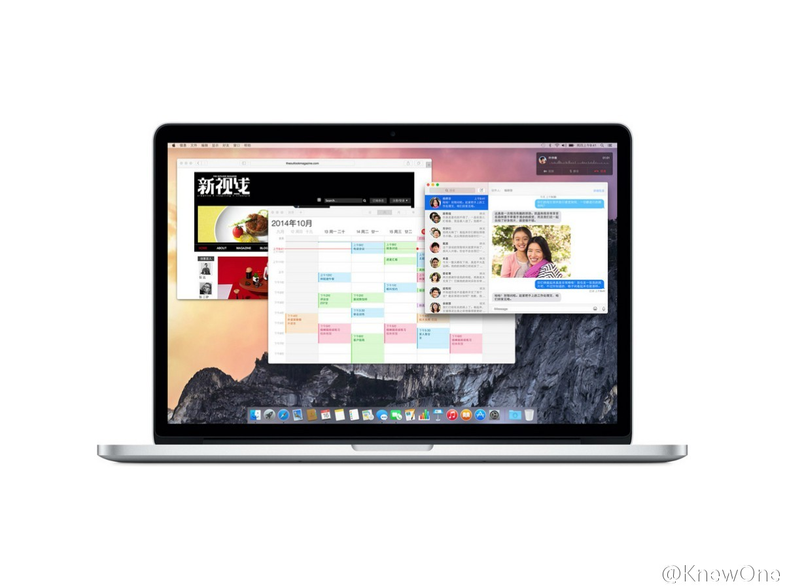

回复@难得优雅:我试过，地址和电话还专门填的真实美国地址和电话。 还需要美国发的银行卡绑定。我尝试绑定国内银行发的Visa, MasterCard卡都通不过。 //@难得优雅:修改AppStore的个人所在国家，就可以下载“美国市场”的软件。修改的方法比较特别，要去iCloud的个人休息里面改。 //@Ada李力:@KnewOne:美丽也是一个技术活，常自诩女汉子的 @Ada李力 身在一个男多女少的IT行业将近二十年，一直对自己的生活持着一个对付的态度。现在，她开始把花在工作及上学的精力投放在让自己变得更漂亮的事情上，展现了女子们在追求更好的自己的路上，无论如何都需要不断努力、学习。网页链接 